绿框进入正文 CER；红/蓝/紫框保留原始坐标但不进入正文。请重点核对角色、正文投影和图文阅读顺序。
input=doc_ai_general_education_scan_clean page=1; source page=21; inherited=ds1-page-pdf-021; image sha256=3dacb7851732d636f98126872d6f50ef87d788541ca741f6512b5bfbcfcb8908
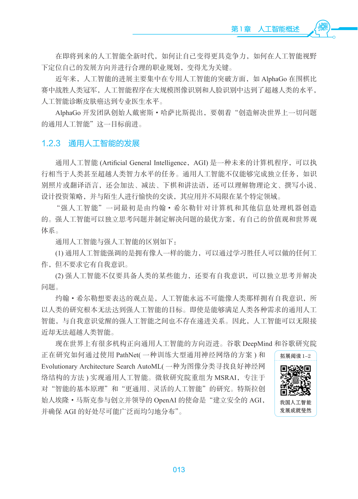
在即将到来的人工智能全新时代，如何让自己变得更具竞争力，如何在人工智能视野 下定位自己的发展方向并进行合理的职业规划，变得尤为关键。 近年来，人工智能的进展主要集中在专用人工智能的突破方面，如AlphaGo在围棋比 赛中战胜人类冠军，人工智能程序在大规模图像识别和人脸识别中达到了超越人类的水平， 人工智能诊断皮肤癌达到专业医生水平。 AlphaGo开发团队创始人戴密斯·哈萨比斯提出，要朝着“创造解决世界上一切问题 的通用人工智能”这一目标前进。 1.2.3 通用人工智能的发展 通用人工智能(Artificial General Intelligence，AGI)是一种未来的计算机程序，可以执 行相当于人类甚至超越人类智力水平的任务。通用人工智能不仅能够完成独立任务，如识 别照片或翻译语言，还会加法、减法、下棋和讲法语，还可以理解物理论文、撰写小说、 设计投资策略，并与陌生人进行愉快的交谈，其应用并不局限在某个特定领域。 “强人工智能”一词最初是由约翰·希尔勒针对计算机和其他信息处理机器创造 的。强人工智能可以独立思考问题并制定解决问题的最优方案，有自己的价值观和世界观 体系。 通用人工智能与强人工智能的区别如下： (1)通用人工智能强调的是拥有像人一样的能力，可以通过学习胜任人可以做的任何工 作，但不要求它有自我意识。 (2)强人工智能不仅要具备人类的某些能力，还要有自我意识，可以独立思考并解决 问题。 约翰·希尔勒想要表达的观点是，人工智能永远不可能像人类那样拥有自我意识，所 以人类的研究根本无法达到强人工智能的目标。即使是能够满足人类各种需求的通用人工 智能，与自我意识觉醒的强人工智能之间也不存在递进关系。因此，人工智能可以无限接 近却无法超越人类智能。 现在世界上有很多机构正向通用人工智能的方向迈进。谷歌DeepMind和谷歌研究院 正在研究如何通过使用PathNet(一种训练大型通用神经网络的方案)和 Evolutionary Architecture Search AutoML(一种为图像分类寻找良好神经网 络结构的方法)实现通用人工智能。微软研究院重组为MSRAI，专注于 对“智能的基本原理”和“更通用、灵活的人工智能”的研究。特斯拉创 始人埃隆·马斯克参与创立并领导的OpenAI的使命是“建立安全的AGI， 并确保AGI的好处尽可能广泛而均匀地分布” 。
qr_related — 拓展阅读1-2qr_related — 我国人工智能
发展成就斐然qr_related — [image region]header — 第1章header — 人工智能概述page_number — 013input=doc_ai_general_education_scan_clean page=2; source page=23; inherited=ds1-page-pdf-023; image sha256=349bbea07f84c04e8efd771f8fa1f451ffce1dd27949df6d733ef32cdde2d8b3
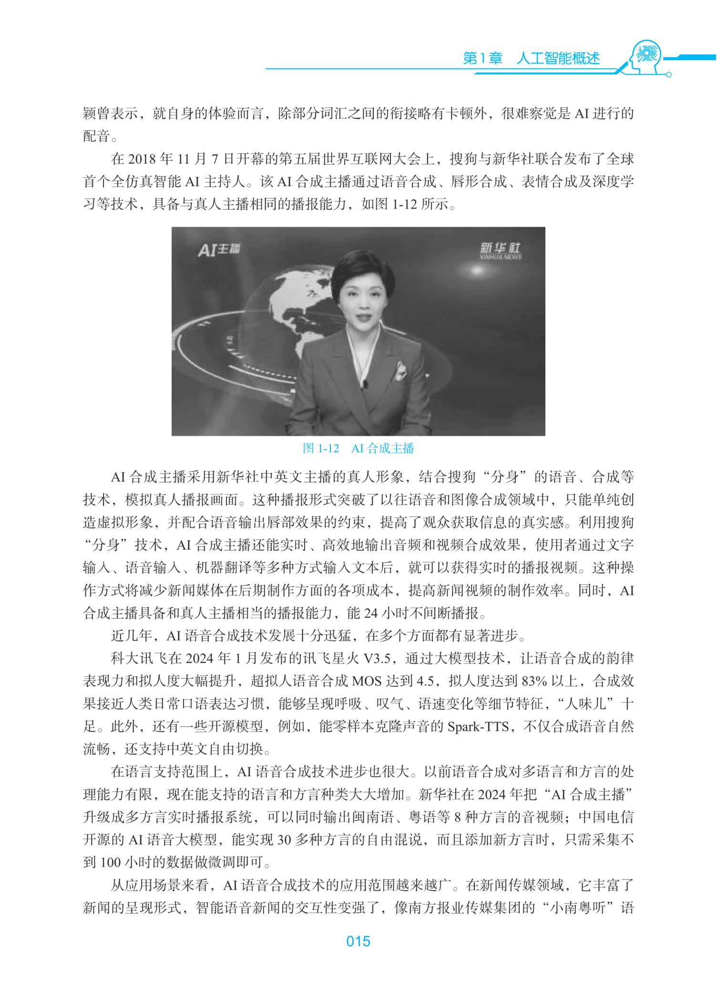
颖曾表示，就自身的体验而言，除部分词汇之间的衔接略有卡顿外，很难察觉是AI进行的 配音。 在2018年11月7日开幕的第五届世界互联网大会上，搜狗与新华社联合发布了全球 首个全仿真智能AI主持人。该AI合成主播通过语音合成、唇形合成、表情合成及深度学 习等技术，具备与真人主播相同的播报能力，如图1-12所示。 AI合成主播采用新华社中英文主播的真人形象，结合搜狗“分身”的语音、合成等 技术，模拟真人播报画面。这种播报形式突破了以往语音和图像合成领域中，只能单纯创 造虚拟形象，并配合语音输出唇部效果的约束，提高了观众获取信息的真实感。利用搜狗 “分身”技术，AI合成主播还能实时、高效地输出音频和视频合成效果，使用者通过文字 输入、语音输入、机器翻译等多种方式输入文本后，就可以获得实时的播报视频。这种操 作方式将减少新闻媒体在后期制作方面的各项成本，提高新闻视频的制作效率。同时，AI 合成主播具备和真人主播相当的播报能力，能24小时不间断播报。 近几年，AI语音合成技术发展十分迅猛，在多个方面都有显著进步。 科大讯飞在2024年1月发布的讯飞星火V3.5，通过大模型技术，让语音合成的韵律 表现力和拟人度大幅提升，超拟人语音合成MOS达到4.5，拟人度达到83%以上，合成效 果接近人类日常口语表达习惯，能够呈现呼吸、叹气、语速变化等细节特征，“人味儿”十 足。此外，还有一些开源模型，例如，能零样本克隆声音的Spark-TTS，不仅合成语音自然 流畅，还支持中英文自由切换。 在语言支持范围上，AI语音合成技术进步也很大。以前语音合成对多语言和方言的处 理能力有限，现在能支持的语言和方言种类大大增加。新华社在2024年把“AI合成主播” 升级成多方言实时播报系统，可以同时输出闽南语、粤语等8种方言的音视频；中国电信 开源的AI语音大模型，能实现30多种方言的自由混说，而且添加新方言时，只需采集不 到100小时的数据做微调即可。 从应用场景来看，AI语音合成技术的应用范围越来越广。在新闻传媒领域，它丰富了 新闻的呈现形式，智能语音新闻的交互性变强了，像南方报业传媒集团的“小南粤听”语
figure_caption — 图1-12figure_caption — AI合成主播figure — [image region]header — 第1章header — 人工智能概述page_number — 015input=doc_ai_general_education_scan_clean page=3; source page=24; inherited=ds1-page-pdf-024; image sha256=37f27655a4e3980670079e104a5555c7990a4b8549765cc7e5d81e367e3e7cd9
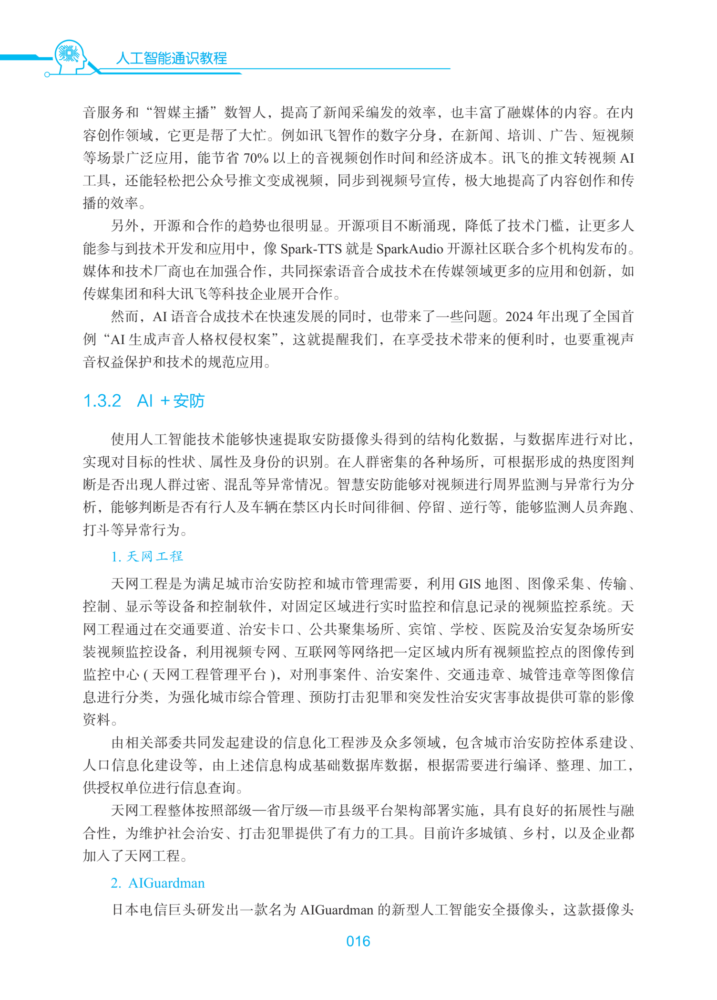
音服务和“智媒主播”数智人，提高了新闻采编发的效率，也丰富了融媒体的内容。在内 容创作领域，它更是帮了大忙。例如讯飞智作的数字分身，在新闻、培训、广告、短视频 等场景广泛应用，能节省70%以上的音视频创作时间和经济成本。讯飞的推文转视频AI 工具，还能轻松把公众号推文变成视频，同步到视频号宣传，极大地提高了内容创作和传 播的效率。 另外，开源和合作的趋势也很明显。开源项目不断涌现，降低了技术门槛，让更多人 能参与到技术开发和应用中，像Spark-TTS就是SparkAudio开源社区联合多个机构发布的。 媒体和技术厂商也在加强合作，共同探索语音合成技术在传媒领域更多的应用和创新，如 传媒集团和科大讯飞等科技企业展开合作。 然而，AI语音合成技术在快速发展的同时，也带来了一些问题。2024年出现了全国首 ，这就提醒我们，在享受技术带来的便利时，也要重视声 例“AI生成声音人格权侵权案” 音权益保护和技术的规范应用。 1.3.2 AI＋安防 使用人工智能技术能够快速提取安防摄像头得到的结构化数据，与数据库进行对比， 实现对目标的性状、属性及身份的识别。在人群密集的各种场所，可根据形成的热度图判 断是否出现人群过密、混乱等异常情况。智慧安防能够对视频进行周界监测与异常行为分 析，能够判断是否有行人及车辆在禁区内长时间徘徊、停留、逆行等，能够监测人员奔跑、 打斗等异常行为。 1.天网工程 天网工程是为满足城市治安防控和城市管理需要，利用GIS地图、图像采集、传输、 控制、显示等设备和控制软件，对固定区域进行实时监控和信息记录的视频监控系统。天 网工程通过在交通要道、治安卡口、公共聚集场所、宾馆、学校、医院及治安复杂场所安 装视频监控设备，利用视频专网、互联网等网络把一定区域内所有视频监控点的图像传到 监控中心(天网工程管理平台)，对刑事案件、治安案件、交通违章、城管违章等图像信 息进行分类，为强化城市综合管理、预防打击犯罪和突发性治安灾害事故提供可靠的影像 资料。 由相关部委共同发起建设的信息化工程涉及众多领域，包含城市治安防控体系建设、 人口信息化建设等，由上述信息构成基础数据库数据，根据需要进行编译、整理、加工， 供授权单位进行信息查询。 天网工程整体按照部级—省厅级—市县级平台架构部署实施，具有良好的拓展性与融 合性，为维护社会治安、打击犯罪提供了有力的工具。目前许多城镇、乡村，以及企业都 加入了天网工程。 2.AIGuardman 日本电信巨头研发出一款名为AIGuardman的新型人工智能安全摄像头，这款摄像头
header — 人工智能通识教程page_number — 016input=doc_ai_general_education_scan_clean page=4; source page=26; inherited=ds1-page-pdf-026; image sha256=e3ec0391ba41570fef31d2204dd3b3409bcf04887d20e7a5307adc7e51c11999
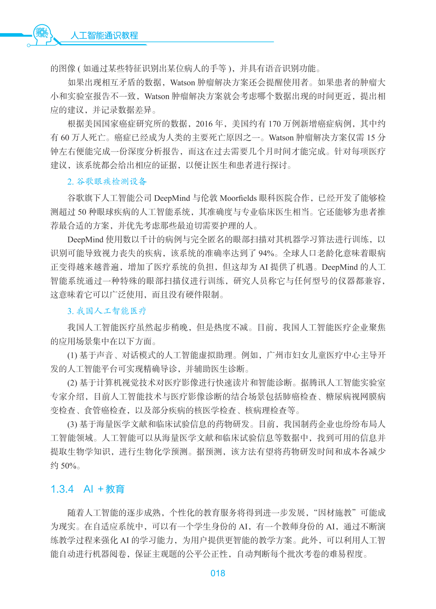
的图像(如通过某些特征识别出某位病人的手等)，并具有语音识别功能。 如果出现相互矛盾的数据，Watson肿瘤解决方案还会提醒使用者。如果患者的肿瘤大 小和实验室报告不一致，Watson肿瘤解决方案就会考虑哪个数据出现的时间更近，提出相 应的建议，并记录数据差异。 根据美国国家癌症研究所的数据，2016年，美国约有170万例新增癌症病例，其中约 有60万人死亡。癌症已经成为人类的主要死亡原因之一。Watson肿瘤解决方案仅需15分 钟左右便能完成一份深度分析报告，而这在过去需要几个月时间才能完成。针对每项医疗 建议，该系统都会给出相应的证据，以便让医生和患者进行探讨。 2.谷歌眼疾检测设备 谷歌旗下人工智能公司DeepMind与伦敦Moorfields眼科医院合作，已经开发了能够检 测超过50种眼球疾病的人工智能系统，其准确度与专业临床医生相当。它还能够为患者推 荐最合适的方案，并优先考虑那些最迫切需要护理的人。 DeepMind使用数以千计的病例与完全匿名的眼部扫描对其机器学习算法进行训练，以 识别可能导致视力丧失的疾病，该系统的准确率达到了94%。全球人口老龄化意味着眼病 正变得越来越普遍，增加了医疗系统的负担，但这却为AI提供了机遇。DeepMind的人工 智能系统通过一种特殊的眼部扫描仪进行训练，研究人员称它与任何型号的仪器都兼容， 这意味着它可以广泛使用，而且没有硬件限制。 3.我国人工智能医疗 我国人工智能医疗虽然起步稍晚，但是热度不减。目前，我国人工智能医疗企业聚焦 的应用场景集中在以下方面。 (1)基于声音、对话模式的人工智能虚拟助理。例如，广州市妇女儿童医疗中心主导开 发的人工智能平台可实现精确导诊，并辅助医生诊断。 (2)基于计算机视觉技术对医疗影像进行快速读片和智能诊断。据腾讯人工智能实验室 专家介绍，目前人工智能技术与医疗影像诊断的结合场景包括肺癌检查、糖尿病视网膜病 变检查、食管癌检查，以及部分疾病的核医学检查、核病理检查等。 (3)基于海量医学文献和临床试验信息的药物研发。目前，我国制药企业也纷纷布局人 工智能领域。人工智能可以从海量医学文献和临床试验信息等数据中，找到可用的信息并 提取生物学知识，进行生物化学预测。据预测，该方法有望将药物研发时间和成本各减少 约50%。 1.3.4 AI＋教育 随着人工智能的逐步成熟，个性化的教育服务将得到进一步发展，“因材施教”可能成 为现实。在自适应系统中，可以有一个学生身份的AI，有一个教师身份的AI，通过不断演 练教学过程来强化AI的学习能力，为用户提供更智能的教学方案。此外，可以利用人工智 能自动进行机器阅卷，保证主观题的公平公正性，自动判断每个批次考卷的难易程度。
header — 人工智能通识教程page_number — 018input=doc_ai_general_education_scan_clean page=5; source page=30; inherited=ds1-page-pdf-030; image sha256=6088c910cc35a9686abe908b7edf509f077e8f5c88cc336ff1878d933c6c513d
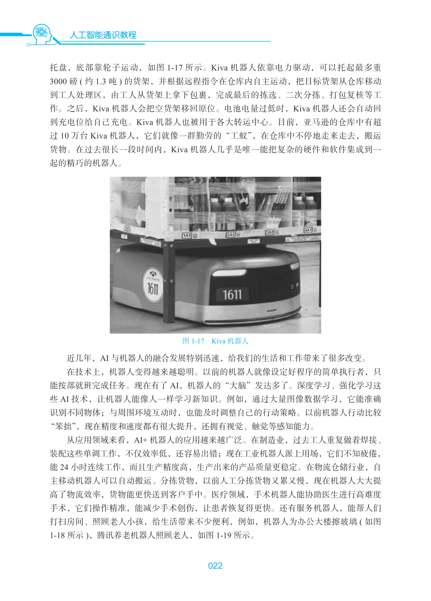
托盘，底部靠轮子运动，如图1-17所示。Kiva机器人依靠电力驱动，可以托起最多重 3000磅(约1.3吨)的货架，并根据远程指令在仓库内自主运动，把目标货架从仓库移动 到工人处理区，由工人从货架上拿下包裹，完成最后的拣选、二次分拣、打包复核等工 作。之后，Kiva机器人会把空货架移回原位。电池电量过低时，Kiva机器人还会自动回 到充电位给自己充电。Kiva机器人也被用于各大转运中心。目前，亚马逊的仓库中有超 过10万台Kiva机器人，它们就像一群勤劳的“工蚁”，在仓库中不停地走来走去，搬运 货物。在过去很长一段时间内，Kiva机器人几乎是唯一能把复杂的硬件和软件集成到一 起的精巧的机器人。 近几年，AI与机器人的融合发展特别迅速，给我们的生活和工作带来了很多改变。 在技术上，机器人变得越来越聪明。以前的机器人就像设定好程序的简单执行者，只 能按部就班完成任务。现在有了AI，机器人的“大脑”发达多了。深度学习、强化学习这 些AI技术，让机器人能像人一样学习新知识。例如，通过大量图像数据学习，它能准确 识别不同物体；与周围环境互动时，也能及时调整自己的行动策略。以前机器人行动比较 “笨拙”，现在精度和速度都有很大提升，还拥有视觉、触觉等感知能力。 从应用领域来看，AI+机器人的应用越来越广泛。在制造业，过去工人重复做着焊接、 装配这些单调工作，不仅效率低，还容易出错；现在工业机器人派上用场，它们不知疲倦， 能24小时连续工作，而且生产精度高，生产出来的产品质量更稳定。在物流仓储行业，自 主移动机器人可以自动搬运、分拣货物，以前人工分拣货物又累又慢，现在机器人大大提 高了物流效率，货物能更快送到客户手中。医疗领域，手术机器人能协助医生进行高难度 手术，它们操作精准，能减少手术创伤，让患者恢复得更快。还有服务机器人，能帮人们 打扫房间、照顾老人小孩，给生活带来不少便利，例如，机器人为办公大楼擦玻璃(如图 1-18所示)，腾讯养老机器人照顾老人，如图1-19所示。
figure_caption — 图1-17figure_caption — Kiva机器人figure — [image region]header — 人工智能通识教程page_number — 022input=doc_ai_general_education_scan_compressed page=1; source page=11; inherited=ds1-page-pdf-011; image sha256=4d1f96f38104a4bc139e64358cfdb4db3a2cdaaceeede5bf9d779bc520f9e9a4
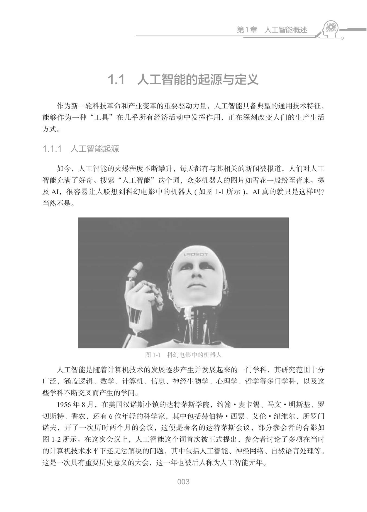
1.1 人工智能的起源与定义 作为新一轮科技革命和产业变革的重要驱动力量，人工智能具备典型的通用技术特征， 能够作为一种“工具”在几乎所有经济活动中发挥作用，正在深刻改变人们的生产生活 方式。 1.1.1 人工智能起源 如今，人工智能的火爆程度不断攀升，每天都有与其相关的新闻被报道，人们对人工 智能充满了好奇。搜索“人工智能”这个词，众多机器人的图片如雪花一般纷至沓来。提 及AI，很容易让人联想到科幻电影中的机器人(如图1-1所示)，AI真的就只是这样吗？ 当然不是。 人工智能是随着计算机技术的发展逐步产生并发展起来的一门学科，其研究范围十分 广泛，涵盖逻辑、数学、计算机、信息、神经生物学、心理学、哲学等多门学科，以及这 些学科不断交叉而产生的学问。 1956年8月，在美国汉诺斯小镇的达特茅斯学院，约翰·麦卡锡、马文·明斯基、罗 切斯特、香农，还有6位年轻的科学家，其中包括赫伯特·西蒙、艾伦·纽维尔、所罗门 诺夫，开了一次历时两个月的会议，这便是著名的达特茅斯会议，部分参会者的合影如 图1-2所示。在这次会议上，人工智能这个词首次被正式提出，参会者讨论了多项在当时 的计算机技术水平下还无法解决的问题，其中包括人工智能、神经网络、自然语言处理等。 这是一次具有重要历史意义的大会，这一年也被后人称为人工智能元年。
figure_caption — 图1-1figure_caption — 科幻电影中的机器人figure — [image region]header — 第1章header — 人工智能概述page_number — 003input=doc_ai_general_education_scan_compressed page=2; source page=15; inherited=ds1-page-pdf-015; image sha256=e06e8cf68fa1cb68f99f7715885bbf887e1444683c89baed8b3d7d630d803a8b
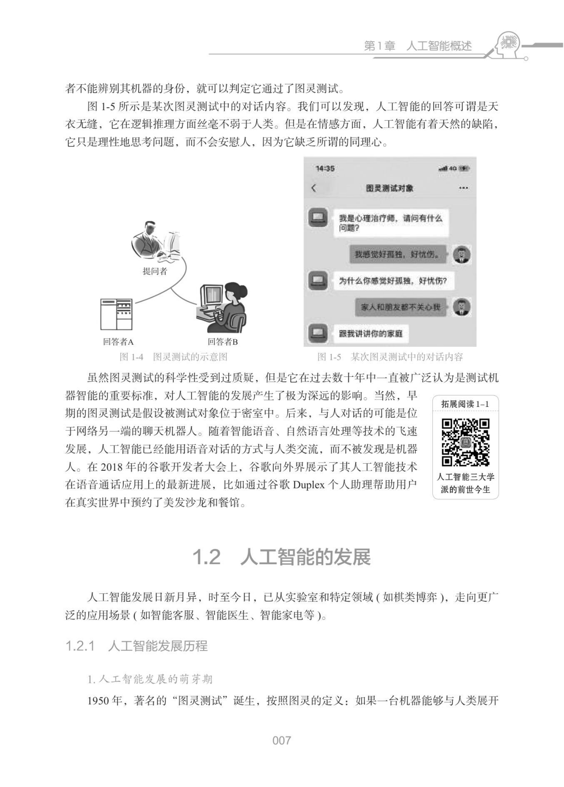
者不能辨别其机器的身份，就可以判定它通过了图灵测试。 图1-5所示是某次图灵测试中的对话内容。我们可以发现，人工智能的回答可谓是天 衣无缝，它在逻辑推理方面丝毫不弱于人类。但是在情感方面，人工智能有着天然的缺陷， 它只是理性地思考问题，而不会安慰人，因为它缺乏所谓的同理心。 虽然图灵测试的科学性受到过质疑，但是它在过去数十年中一直被广泛认为是测试机 器智能的重要标准，对人工智能的发展产生了极为深远的影响。当然，早 期的图灵测试是假设被测试对象位于密室中。后来，与人对话的可能是位 于网络另一端的聊天机器人。随着智能语音、自然语言处理等技术的飞速 发展，人工智能已经能用语音对话的方式与人类交流，而不被发现是机器 人。在2018年的谷歌开发者大会上，谷歌向外界展示了其人工智能技术 在语音通话应用上的最新进展，比如通过谷歌Duplex个人助理帮助用户 在真实世界中预约了美发沙龙和餐馆。 1.2 人工智能的发展 人工智能发展日新月异，时至今日，已从实验室和特定领域(如棋类博弈)，走向更广 泛的应用场景(如智能客服、智能医生、智能家电等)。 1.2.1 人工智能发展历程 1.人工智能发展的萌芽期 1950年，著名的“图灵测试”诞生，按照图灵的定义：如果一台机器能够与人类展开
figure_embedded_text — 䬚㔱figure_embedded_text — ఊむ㔱Afigure_caption — 图1-4figure_embedded_text — ఊむ㔱Bfigure_caption — 图1-5figure_caption — 图灵测试的示意图figure_caption — 某次图灵测试中的对话内容qr_related — 拓展阅读1-1qr_related — 人工智能三大学
派的前世今生figure — [image region]figure — [image region]qr_related — [image region]header — 第1章header — 人工智能概述page_number — 007input=doc_ai_general_education_scan_compressed page=3; source page=18; inherited=ds1-page-pdf-018; image sha256=092e688c3ef994b65882b333b84052d975850b6ae8a37a2ea116256087590c1d
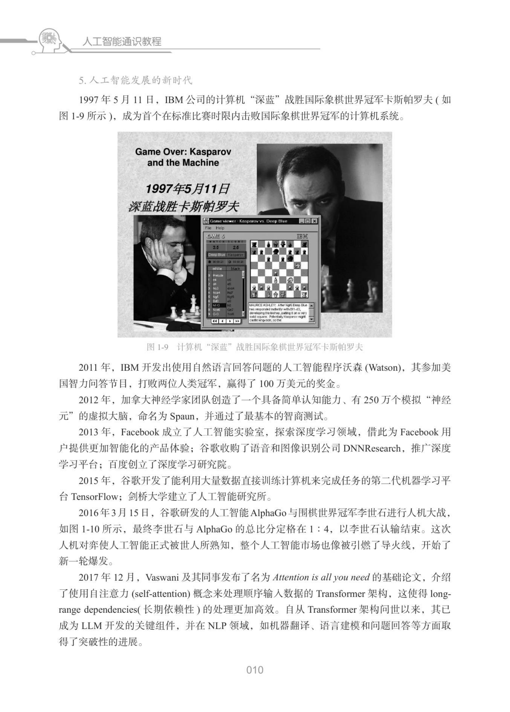
5.人工智能发展的新时代 1997年5月11日，IBM公司的计算机“深蓝”战胜国际象棋世界冠军卡斯帕罗夫(如 图1-9所示)，成为首个在标准比赛时限内击败国际象棋世界冠军的计算机系统。 2011年，IBM开发出使用自然语言回答问题的人工智能程序沃森(Watson)，其参加美 国智力问答节目，打败两位人类冠军，赢得了100万美元的奖金。 2012年，加拿大神经学家团队创造了一个具备简单认知能力、有250万个模拟“神经 元”的虚拟大脑，命名为Spaun，并通过了最基本的智商测试。 2013年，Facebook成立了人工智能实验室，探索深度学习领域，借此为Facebook用 户提供更加智能化的产品体验；谷歌收购了语音和图像识别公司DNNResearch，推广深度 学习平台；百度创立了深度学习研究院。 2015年，谷歌开发了能利用大量数据直接训练计算机来完成任务的第二代机器学习平 台TensorFlow；剑桥大学建立了人工智能研究所。 2016年3月15日，谷歌研发的人工智能AlphaGo与围棋世界冠军李世石进行人机大战， 如图1-10所示，最终李世石与AlphaGo的总比分定格在1：4，以李世石认输结束。这次 人机对弈使人工智能正式被世人所熟知，整个人工智能市场也像被引燃了导火线，开始了 新一轮爆发。 2017年12月，Vaswani及其同事发布了名为Attention is all you need的基础论文，介绍 了使用自注意力(self-attention)概念来处理顺序输入数据的Transformer架构，这使得long- range dependencies(长期依赖性)的处理更加高效。自从Transformer架构问世以来，其已 成为LLM开发的关键组件，并在NLP领域，如机器翻译、语言建模和问题回答等方面取 得了突破性的进展。
figure_caption — 图1-9figure_caption — 计算机“深蓝”战胜国际象棋世界冠军卡斯帕罗夫figure — [image region]header — 人工智能通识教程page_number — 010input=doc_ai_general_education_scan_compressed page=4; source page=27; inherited=ds1-page-pdf-027; image sha256=64136969317d011ef1b77d93da658f15326ab63cb870a532e14820a0a41d6a0e
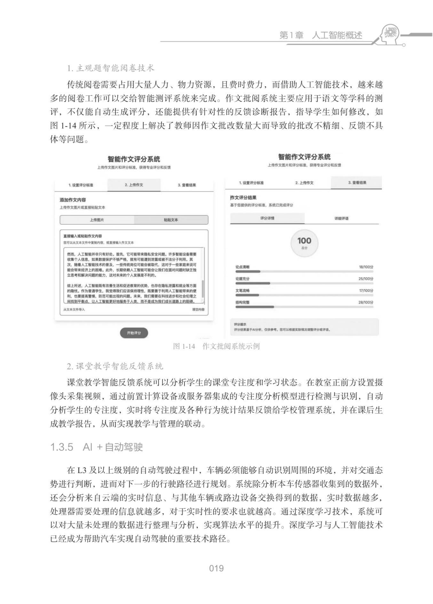
1.主观题智能阅卷技术 传统阅卷需要占用大量人力、物力资源，且费时费力，而借助人工智能技术，越来越 多的阅卷工作可以交给智能测评系统来完成。作文批阅系统主要应用于语文等学科的测 评，不仅能自动生成评分，还能提供有针对性的反馈诊断报告，指导学生如何修改，如 图1-14所示，一定程度上解决了教师因作文批改数量大而导致的批改不精细、反馈不具 体等问题。 2.课堂教学智能反馈系统 课堂教学智能反馈系统可以分析学生的课堂专注度和学习状态。在教室正前方设置摄 像头采集视频，通过前置计算设备或服务器集成的专注度分析模型进行检测与识别，自动 分析学生的专注度，实时将专注度及各种行为统计结果反馈给学校管理系统，并在课后生 成教学报告，从而实现教学与管理的联动。 1.3.5 AI＋自动驾驶 在L3及以上级别的自动驾驶过程中，车辆必须能够自动识别周围的环境，并对交通态 势进行判断，进而对下一步的行驶路径进行规划。系统除分析本车传感器收集到的数据外， 还会分析来自云端的实时信息、与其他车辆或路边设备交换得到的数据，实时数据越多， 处理器需要处理的信息就越多，对于实时性的要求也就越高。通过深度学习技术，系统可 以对大量未处理的数据进行整理与分析，实现算法水平的提升。深度学习与人工智能技术 已经成为帮助汽车实现自动驾驶的重要技术路径。
figure_caption — 图1-14figure_caption — 作文批阅系统示例figure — [image region]figure — [image region]header — 第1章header — 人工智能概述page_number — 019input=doc_ai_general_education_scan_compressed page=5; source page=31; inherited=ds1-page-pdf-031; image sha256=2b15febebd08654cb19bbd369f4476af9611b6249564b09b5471d9b79835359a
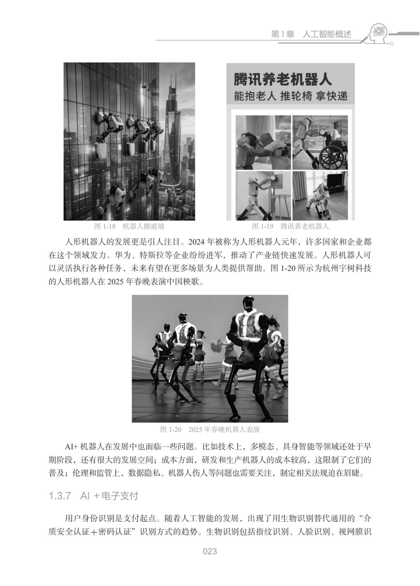
人形机器人的发展更是引人注目。2024年被称为人形机器人元年，许多国家和企业都 在这个领域发力。华为、特斯拉等企业纷纷进军，推动了产业链快速发展。人形机器人可 以灵活执行各种任务，未来有望在更多场景为人类提供帮助。图1-20所示为杭州宇树科技 的人形机器人在2025年春晚表演中国秧歌。 AI+机器人在发展中也面临一些问题。比如技术上，多模态、具身智能等领域还处于早 期阶段，还有很大的发展空间；成本方面，研发和生产机器人的成本较高，这限制了它们的 普及；伦理和监管上，数据隐私、机器人伤人等问题也需要关注，制定相关法规迫在眉睫。 1.3.7 AI＋电子支付 用户身份识别是支付起点。随着人工智能的发展，出现了用生物识别替代通用的“介 质安全认证＋密码认证”识别方式的趋势。生物识别包括指纹识别、人脸识别、视网膜识
figure_caption — 图1-18figure_caption — 图1-19figure_caption — 机器人擦玻璃figure_caption — 腾讯养老机器人figure_caption — 图1-20figure_caption — 2025年春晚机器人表演figure — [image region]figure — [image region]figure — [image region]header — 第1章header — 人工智能概述page_number — 023input=doc_ai_general_education_mixed page=9; source page=9; inherited=new annotation; image sha256=3939bca9944dd9423e5bacfb2f8c570b4910ed2f00db2f1c9e6746a4e5fe5310
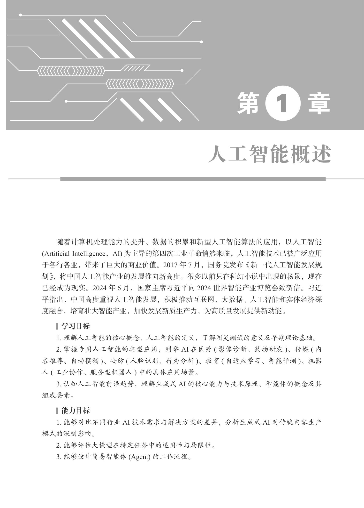
第1 章 人工智能概述 随着计算机处理能力的提升、数据的积累和新型人工智能算法的应用，以人工智能 (Artificial Intelligence，AI) 为主导的第四次工业革命悄然来临，人工智能技术已被广泛应用 于各行各业，带来了巨大的商业价值。2017 年7 月，国务院发布《新一代人工智能发展规 划》，将中国人工智能产业的发展推向新高度。很多以前只在科幻小说中出现的场景，现在 已经成为现实。2024 年6 月，国家主席习近平向2024 世界智能产业博览会致贺信。习近 平指出，中国高度重视人工智能发展，积极推动互联网、大数据、人工智能和实体经济深 度融合，培育壮大智能产业，加快发展新质生产力，为高质量发展提供新动能。 学习目标 1. 理解人工智能的核心概念、人工智能的定义，了解图灵测试的意义及早期理论基础。 2. 掌握专用人工智能的典型应用，列举AI 在医疗( 影像诊断、药物研发)、传媒( 内 容推荐、自动撰稿)、安防( 人脸识别、行为分析)、教育( 自适应学习、智能评测)、机器 人( 工业协作、服务型机器人) 中的具体应用场景。 3. 认知人工智能前沿趋势，理解生成式AI 的核心能力与技术原理、智能体的概念及其 组成要素。 能力目标 1. 能够对比不同行业AI 技术需求与解决方案的差异，分析生成式AI 对传统内容生产 模式的深刻影响。 2. 能够评估大模型在特定任务中的适用性与局限性。 3. 能够设计简易智能体(Agent) 的工作流程。
input=doc_ai_general_education_mixed page=22; source page=22; inherited=new annotation; image sha256=5bfec4366aad8955ff7b7825a77263bacc1bac1ab2add1c5e735e725ea9fbaa3
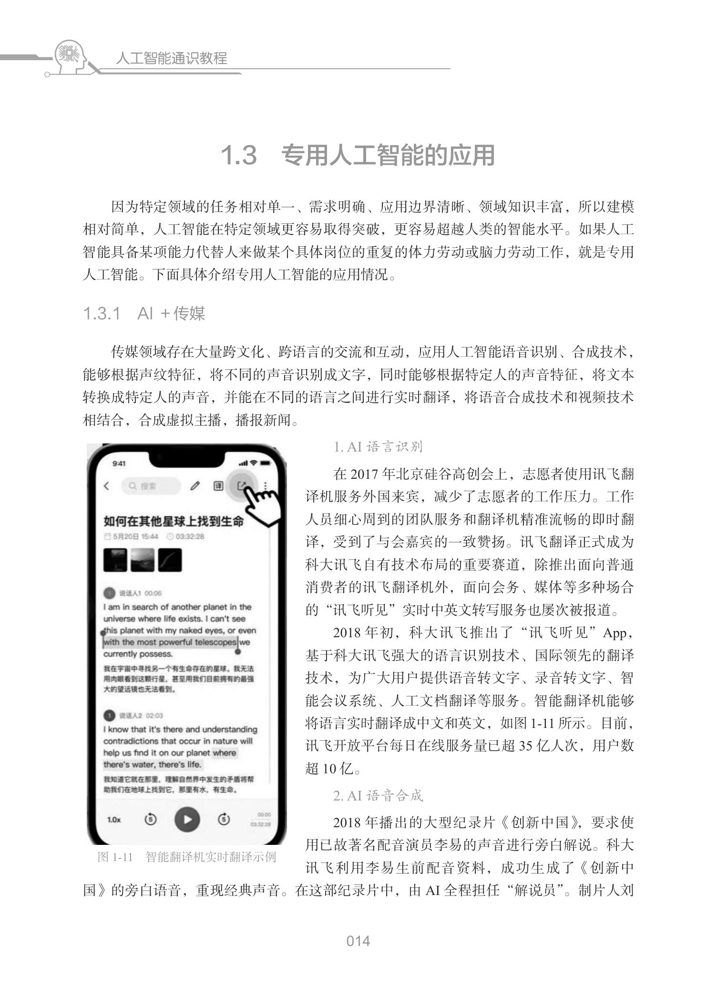
1.3 专用人工智能的应用 因为特定领域的任务相对单一、需求明确、应用边界清晰、领域知识丰富，所以建模 相对简单，人工智能在特定领域更容易取得突破，更容易超越人类的智能水平。如果人工 智能具备某项能力代替人来做某个具体岗位的重复的体力劳动或脑力劳动工作，就是专用 人工智能。下面具体介绍专用人工智能的应用情况。 1.3.1 AI ＋传媒 传媒领域存在大量跨文化、跨语言的交流和互动，应用人工智能语音识别、合成技术， 能够根据声纹特征，将不同的声音识别成文字，同时能够根据特定人的声音特征，将文本 转换成特定人的声音，并能在不同的语言之间进行实时翻译，将语音合成技术和视频技术 相结合，合成虚拟主播，播报新闻。 1. AI 语言识别 在2017 年北京硅谷高创会上，志愿者使用讯飞翻 译机服务外国来宾，减少了志愿者的工作压力。工作 人员细心周到的团队服务和翻译机精准流畅的即时翻 译，受到了与会嘉宾的一致赞扬。讯飞翻译正式成为 科大讯飞自有技术布局的重要赛道，除推出面向普通 消费者的讯飞翻译机外，面向会务、媒体等多种场合 的“讯飞听见”实时中英文转写服务也屡次被报道。 2018 年初，科大讯飞推出了“讯飞听见”App， 基于科大讯飞强大的语言识别技术、国际领先的翻译 技术，为广大用户提供语音转文字、录音转文字、智 能会议系统、人工文档翻译等服务。智能翻译机能够 将语言实时翻译成中文和英文，如图1-11 所示。目前， 讯飞开放平台每日在线服务量已超35 亿人次，用户数 超10 亿。 2. AI 语音合成 2018 年播出的大型纪录片《创新中国》，要求使 用已故著名配音演员李易的声音进行旁白解说。科大 讯飞利用李易生前配音资料，成功生成了《创新中 国》的旁白语音，重现经典声音。在这部纪录片中，由AI 全程担任“解说员”。制片人刘
header — 人工智能通识教程page_number — 014figure — [image region]figure_caption — 图1-11 智能翻译机实时翻译示例input=doc_ai_general_education_mixed page=25; source page=25; inherited=new annotation; image sha256=49e9e553ff08b065d544d7e6a852f80561ee1a7183f915ded74241c22051013c
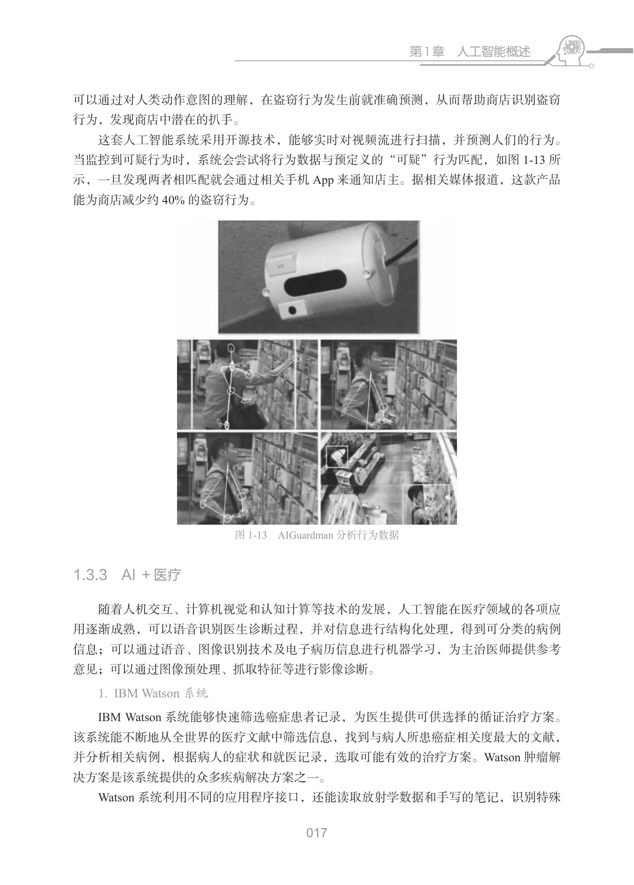
可以通过对人类动作意图的理解，在盗窃行为发生前就准确预测，从而帮助商店识别盗窃 行为，发现商店中潜在的扒手。 这套人工智能系统采用开源技术，能够实时对视频流进行扫描，并预测人们的行为。 当监控到可疑行为时，系统会尝试将行为数据与预定义的“可疑”行为匹配，如图1-13 所 示，一旦发现两者相匹配就会通过相关手机App 来通知店主。据相关媒体报道，这款产品 能为商店减少约40% 的盗窃行为。 1.3.3 AI ＋医疗 随着人机交互、计算机视觉和认知计算等技术的发展，人工智能在医疗领域的各项应 用逐渐成熟，可以语音识别医生诊断过程，并对信息进行结构化处理，得到可分类的病例 信息；可以通过语音、图像识别技术及电子病历信息进行机器学习，为主治医师提供参考 意见；可以通过图像预处理、抓取特征等进行影像诊断。 1. IBM Watson 系统 IBM Watson 系统能够快速筛选癌症患者记录，为医生提供可供选择的循证治疗方案。 该系统能不断地从全世界的医疗文献中筛选信息，找到与病人所患癌症相关度最大的文献， 并分析相关病例，根据病人的症状和就医记录，选取可能有效的治疗方案。Watson 肿瘤解 决方案是该系统提供的众多疾病解决方案之一。 Watson 系统利用不同的应用程序接口，还能读取放射学数据和手写的笔记，识别特殊
header — 第1 章 人工智能概述page_number — 017figure — [image region]figure_caption — 图1-13 AIGuardman 分析行为数据input=doc_ai_general_education_mixed page=29; source page=29; inherited=new annotation; image sha256=546050f5bf3ca9f9839b0a6cc025f19207e1d4ccc7a8833957a5ad74a64c1a6d
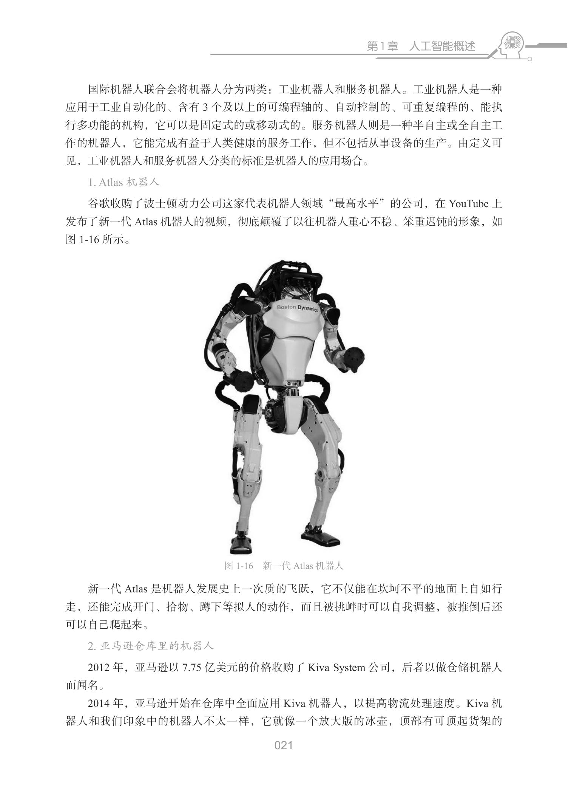
国际机器人联合会将机器人分为两类：工业机器人和服务机器人。工业机器人是一种 应用于工业自动化的、含有3 个及以上的可编程轴的、自动控制的、可重复编程的、能执 行多功能的机构，它可以是固定式的或移动式的。服务机器人则是一种半自主或全自主工 作的机器人，它能完成有益于人类健康的服务工作，但不包括从事设备的生产。由定义可 见，工业机器人和服务机器人分类的标准是机器人的应用场合。 1. Atlas 机器人 谷歌收购了波士顿动力公司这家代表机器人领域“最高水平”的公司，在YouTube 上 发布了新一代Atlas 机器人的视频，彻底颠覆了以往机器人重心不稳、笨重迟钝的形象，如 图1-16 所示。 新一代Atlas 是机器人发展史上一次质的飞跃，它不仅能在坎坷不平的地面上自如行 走，还能完成开门、拾物、蹲下等拟人的动作，而且被挑衅时可以自我调整，被推倒后还 可以自己爬起来。 2. 亚马逊仓库里的机器人 2012 年，亚马逊以7.75 亿美元的价格收购了Kiva System 公司，后者以做仓储机器人 而闻名。 2014 年，亚马逊开始在仓库中全面应用Kiva 机器人，以提高物流处理速度。Kiva 机 器人和我们印象中的机器人不太一样，它就像一个放大版的冰壶，顶部有可顶起货架的
header — 第1 章 人工智能概述page_number — 021figure — [image region]figure_caption — 图1-16 新一代Atlas 机器人input=doc_ai_general_education_mixed page=32; source page=32; inherited=ds1-page-pdf-032; image sha256=265819c798da8dde1bce3108a00a229484a774d2d6a5d38a0be5e2fd3623afe8
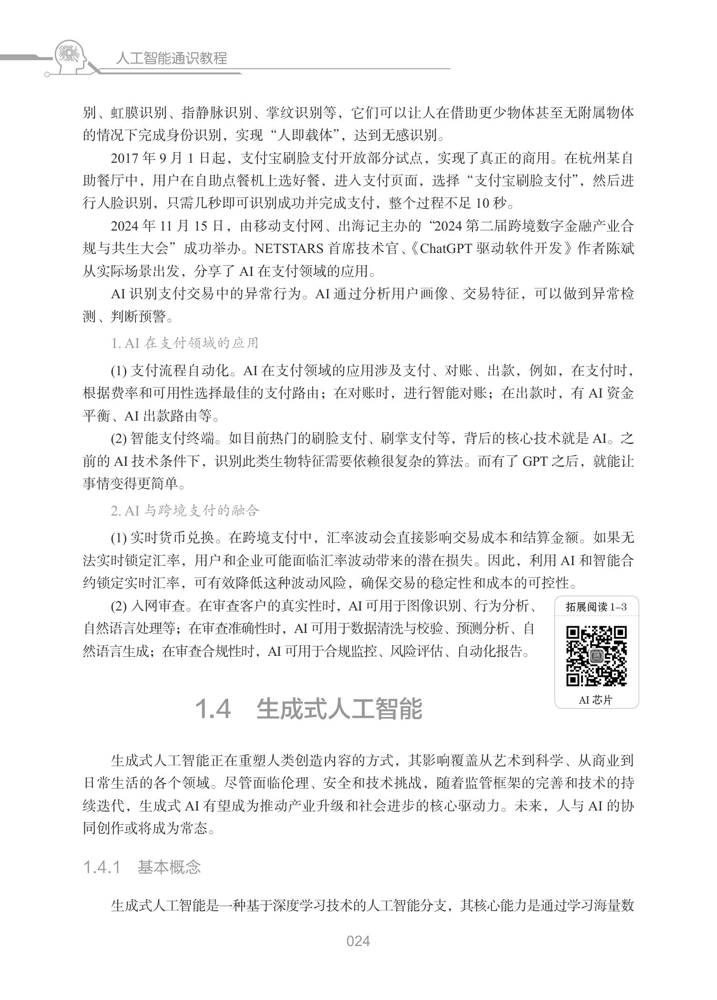
别、虹膜识别、指静脉识别、掌纹识别等，它们可以让人在借助更少物体甚至无附属物体 的情况下完成身份识别，实现“人即载体”，达到无感识别。 2017年9月1日起，支付宝刷脸支付开放部分试点，实现了真正的商用。在杭州某自 助餐厅中，用户在自助点餐机上选好餐，进入支付页面，选择“支付宝刷脸支付”，然后进 行人脸识别，只需几秒即可识别成功并完成支付，整个过程不足10秒。 2024年11月15日，由移动支付网、出海记主办的“2024第二届跨境数字金融产业合 规与共生大会”成功举办。NETSTARS首席技术官、《ChatGPT驱动软件开发》作者陈斌 从实际场景出发，分享了AI在支付领域的应用。 AI识别支付交易中的异常行为。AI通过分析用户画像、交易特征，可以做到异常检 测、判断预警。 1.AI在支付领域的应用 (1)支付流程自动化。AI在支付领域的应用涉及支付、对账、出款，例如，在支付时， 根据费率和可用性选择最佳的支付路由；在对账时，进行智能对账；在出款时，有AI资金 平衡、AI出款路由等。 (2)智能支付终端。如目前热门的刷脸支付、刷掌支付等，背后的核心技术就是AI。之 前的AI技术条件下，识别此类生物特征需要依赖很复杂的算法。而有了GPT之后，就能让 事情变得更简单。 2.AI与跨境支付的融合 (1)实时货币兑换。在跨境支付中，汇率波动会直接影响交易成本和结算金额。如果无 法实时锁定汇率，用户和企业可能面临汇率波动带来的潜在损失。因此，利用AI和智能合 约锁定实时汇率，可有效降低这种波动风险，确保交易的稳定性和成本的可控性。 (2)入网审查。在审查客户的真实性时，AI可用于图像识别、行为分析、 自然语言处理等；在审查准确性时，AI可用于数据清洗与校验、预测分析、自 然语言生成；在审查合规性时，AI可用于合规监控、风险评估、自动化报告。 1.4 生成式人工智能 生成式人工智能正在重塑人类创造内容的方式，其影响覆盖从艺术到科学、从商业到 日常生活的各个领域。尽管面临伦理、安全和技术挑战，随着监管框架的完善和技术的持 续迭代，生成式AI有望成为推动产业升级和社会进步的核心驱动力。未来，人与AI的协 同创作或将成为常态。 1.4.1 基本概念 生成式人工智能是一种基于深度学习技术的人工智能分支，其核心能力是通过学习海量数
qr_related — 拓展阅读1-3qr_related — AI芯片qr_related — [image region]header — 人工智能通识教程page_number — 024